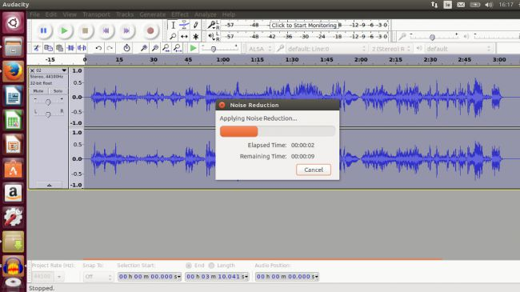

10. Audacity

Audacity это программа-редактор, позволяющая записывать и обрабатывать аудио. Audacity может не только записывать аудио одновременно с нескольких источников ввода (например, с USB -микрофона и электрогитары), но также обрезать и редактировать клипы. Больше того, она поддерживает мультизадачность, позволяя вам, например, записывать слова и подкладывать музыку по отдельности.
Эта программа также поддерживает большое количество аудиоэффектов, таких как снижение уровня шума. Эти эффекты описаны в очень детальном мануале, доступном через саму программу или онлайн. Audacity также поддерживает плагины VST (Virtual Studio Technology). Треки можно экспортировать в популярные звуковые форматы, такие как WAV, OGG и MP3. Если вы хотите узнать побольше об Audacity, можете почитать этот обзор.